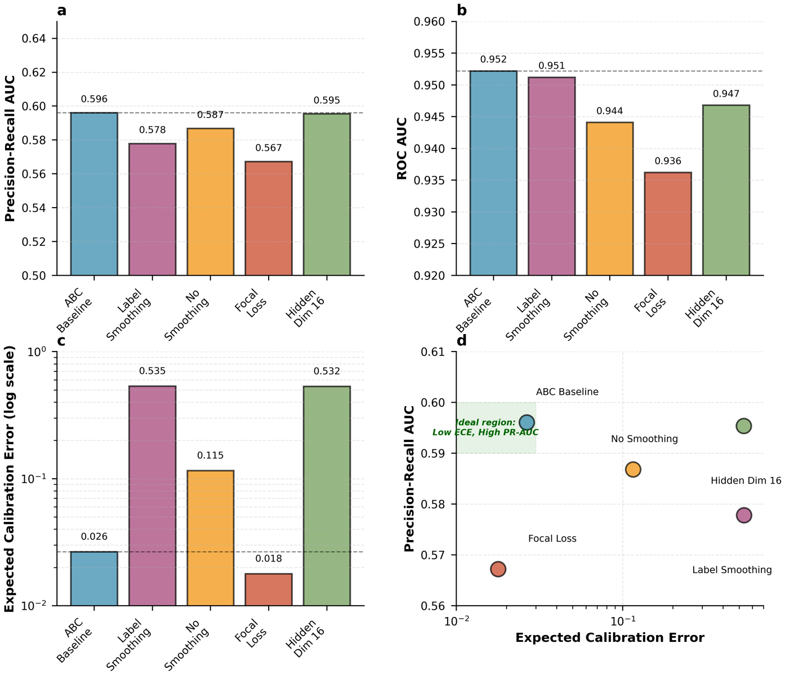
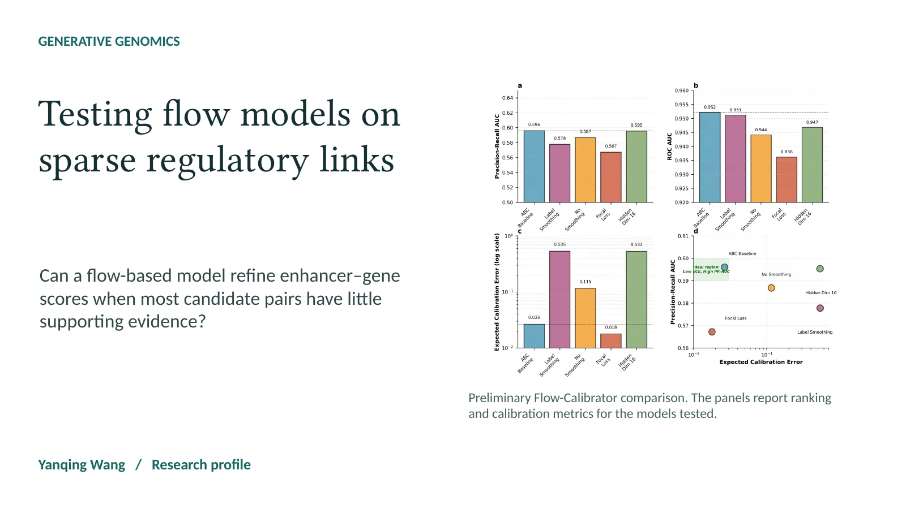

Generative genomics
Testing flow models on sparse regulatory links
Can a flow-based model refine enhancer–gene scores when most candidate pairs have little supporting evidence?
Flow matching · Activity-by-Contact
Approach
I evaluated FlowCF under increasing data sparsity and examined a flow-based calibrator applied to Activity-by-Contact (ABC) enhancer–gene scores.
Preliminary model comparison
The preliminary comparison showed weaker FlowCF performance as sparsity increased. With ABC as the starting score, focal loss gave a small calibration improvement while ranking performance declined.
Proposed follow-up
A follow-up would report calibration and promoter-wise ranking separately, stratify by genomic distance, and compare each model with unadjusted ABC scores on held-out loci.


Project presentation

![Slide 2. I evaluated FlowCF under increasing data sparsity and examined a flow-based calibrator applied to Activity-by-Contact (ABC) enhancer–gene scores. The preliminary comparison showed weaker FlowCF performance as sparsity increased. With ABC as the starting score, focal loss gave a small calibration improvement while ranking performance declined. A follow-up would report calibration and promoter-wise ranking separately, stratify by genomic distance, and compare each model with unadjusted ABC scores on held-out loci.](../assets/slides/generative-genomics-2.webp)
Read the PDF on this page
Method reference · Activity-by-Contact model paper